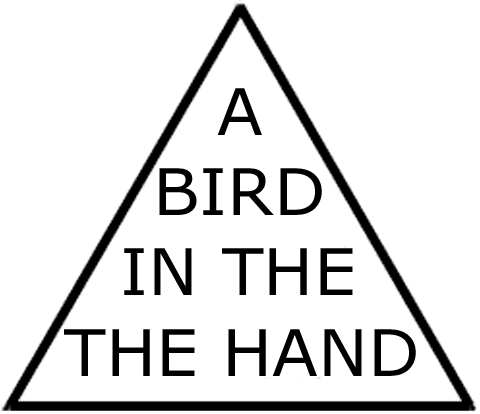
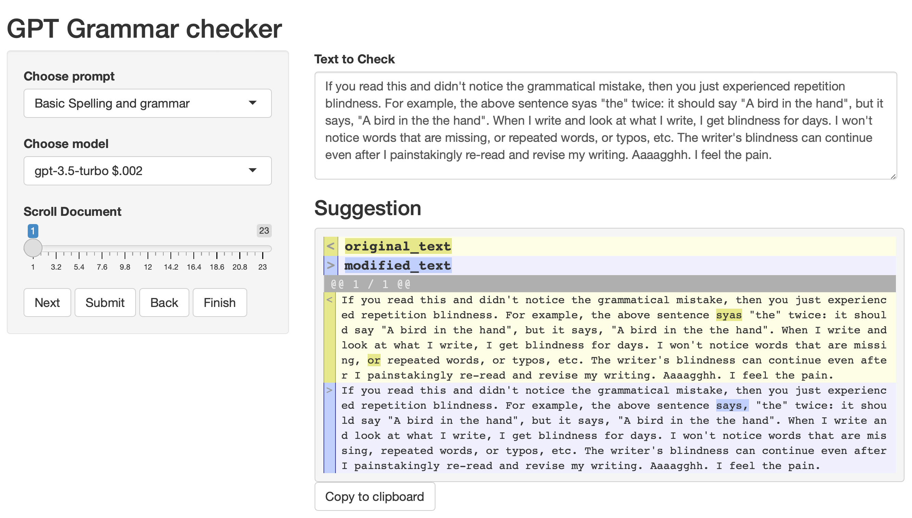
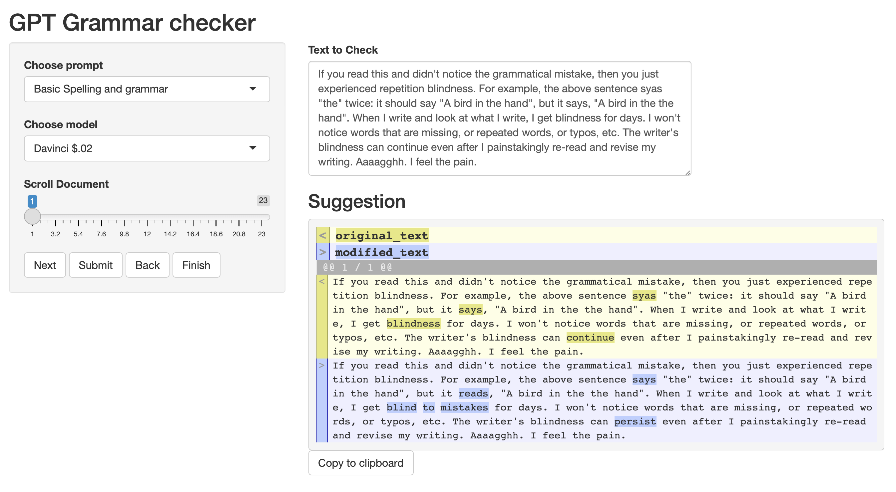
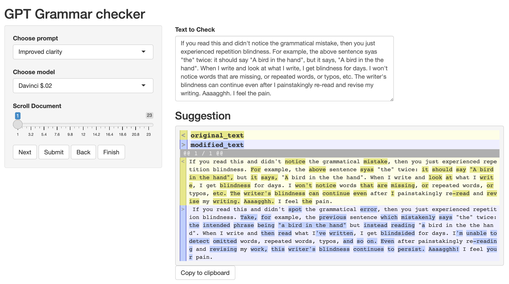

Observations on using LLMs for checking grammar, etc.
In recent posts I’ve been making add-ins and a shiny app for writing assistance tools in R Studio, where I do most of my writing. I’m finally starting to get some usable results. Discussing some observations about the process in this post.
Preamble
Across several recent posts I’ve been putting LLMs to the test as writing assistants. I’m doing this by coding add-ins and a shiny app for R Studio, where I do most of my writing. I’m still in the “trying-stuff-out” mode, and this post is another outlet for experimentation. So far I’ve been equally underwhelmed and impressed by LLMs as writing assistants.
One real-world task that I’d like to accomplish this summer is to copy edit and generally revise/update my intro to cognitive psychology textbook. I know there are lots of typos, missing words, and bad phrasing that can be improved in there, and someone needs to make it better. All of the problems are also my fault because I wrote it.
I authored the textbook in RStudio as a plain text quarto document. RStudio has an OK spell-checker, but I find it not great (mainly because I haven’t taken the time to cultivate my own dictionary). RStudio does not have a grammar checker. I’ve tried some grammar checking solutions, but did not find them suitable for my problems.
I have several writing problems that are hard for me to detect, especially when the writing is fresh. I find the subjective experience of not-seeing-my-mistakes to be similar to the phenomena of repetition blindness. For example, what does the sentence in this picture say?

If you read this and didn’t notice the grammatical mistake, then you just experienced repetition blindness. For example, the above sentence says, “the” twice: it should say “A bird in the hand”, but it says, “A bird in the the hand”. When I write and look at what I write, I get blindness for days. I won’t notice words that are missing, repeated words, or typos, etc. The writer’s blindness can continue even after I painstakingly re-read and revise my writing. Aaaagghh. I feel the pain.
So, I’ve been testing the waters with LLMs as writing assistants. I want something that is fast and easy to use. Perhaps, similar to the spelling and grammar checker in Word. And, I want the suggested edits to fix the basic problems (at a minimum), and if it can do more than that (e.g., suggest better phrasing), great.
My experience so far
Yesterday I went all the way through the first chapter of my textbook and used LLMs as a part of my editing process. After noticing a few major issues and fixing them, I’m now getting decent results with a shiny UI to mediate the process for me.
Basic spelling and grammar
Here’s a screenshot of the Shiny app in action editing a paragraph from this post.

The prompt in this case is very simple:
“You are an editorial writing assistant. Edit the text for spelling and grammar. Don’t change the meaning of the words.”
The model returns a new version of the text, and I use the diffobj library to compare the original text with the suggested text. This provides a quick visual tool to help me see what has been changed. If I like the changes, then I can copy it into my document. The gpt-3.5-turbo and davinci models give pretty good results, but the other ones frequently go off the rails.
Here’s the same text run through a different model. This time it is slightly more heavy-handed, but the suggestions are fine to me. The suggestions will also change slightly each time, even if the input text is the same. This isn’t necessarily a problem, as there are lots of ways to fix my bad writing.

I want to stress the importance of accurate visual highlighting. Before I used a reliable function to compare differences with visual highlighting, I tried using prompts to get the LLM to assess the original text and modified text and report whether or not it made any changes, or to have it highlight the changes using HTML. This is something it may be able to do well (e.g., GPT-4), but the models I have access to were totally unreliable. I’d get edits back that said no changes were made, but there would be several small changes throughout that were hard to spot. The solution was to properly diff the original and modified text.
Rephrasing
I added a couple prompts that offer rephrasing, rather than basic spelling and grammar. The prompts are:
Reduced word count: “You are an editorial writing assistant. Edit the text to reduce word count without changing the meaning.”
Improved clarity: “You are an editorial writing assistant. Edit the text to improve clarity and flow.”
Here’s a screenshot of the same paragraph run through an “improved clarity” prompt.

Now there are many more words changed, and not all for the better. I would not wholesale copy paste this into my document, but I might crib a few of the suggested changes.
Especially with text that contains a lot of domain-specific detail, like the content in my cognitive psych textbook, it is necessary to be hyper-vigilant and look closely at all of the changes to see if they preserve original writing intentions.
Is it working?
I’m leaning into the “stochastic spell-checker” label for what is happening here. The text I send to the LLM is tokenized into a high-dimensional semantic space, it is somehow filtered through the prompt, and then reconstructed back into a textual response. The middle part is a black box, but it produces a response that probabilistically approximates the style of the original (plus something like a proportion of the semantic style of the prompt…ish?).
In any case, just because the prompt is to fix spelling and grammar, does not guarantee that it will! I haven’t tried to determine how many mistakes it misses, so I don’t know how well the process is working. However, the visual highlighting of differences makes it easy for me to see if any proposed change is worth making. And, at least for basic spell-checking and grammar it is finding problems that I am correcting. So, the hit rate seems good, and the miss rate is missing.
I haven’t tried this yet, but I’ve been wondering what happens to text without any instructions or prompts. For example, I’m interested in sending a paragraph, having the system put it through the tokenization process, and then requesting it to reconstruct the original text verbatim. I may try this with a prompt that says “take the input, process it, and then return it without modifications”. However, there is one issue; this sends text with the prompt, and I’m not sure whether having the prompt would introduce any artifacts into the quality of the reconstruction. At the same time, if I send text without instructions, the system seems programmed to do things like sentence completion, and not just take the input, tokenize it, then spit it back out based on its token representation. I’m raising this because I’m curious whether spell-checking behavior comes for free by virtue of the reconstruction process. Idle thoughts, I need to get back to work…
Chapter 2
I’m about to spend the afternoon editing another chapter, and I may update this post with lessons learned as I do that.